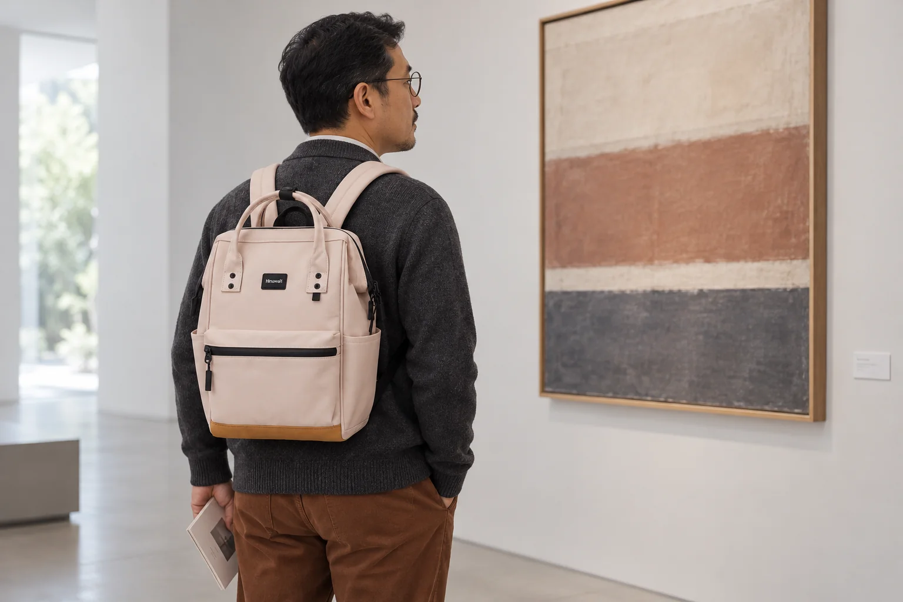
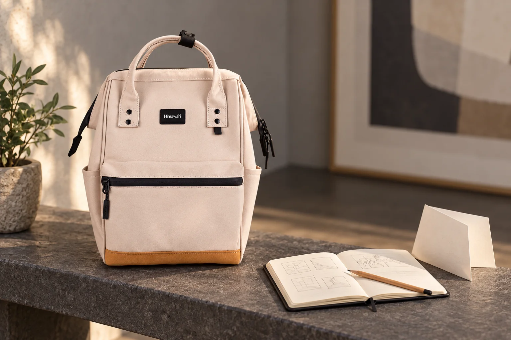

같은 시리즈의 S와 기본형, 백팩 크기를 고르는 질문

백팩 이름 끝에 S가 붙어 있으면 전체가 같은 비율로 작아진 모습부터 떠올리기 쉽습니다. 실제 선택에서는 가로가 줄어든 정도와 세로가 줄어든 정도, 앞뒤 폭의 변화가 다를 수 있습니다. 작게 보이는 가방을 찾는지, 좁은 자리에 두기 쉬운 가방을 찾는지에 따라 중요한 숫자도 달라집니다. 작은 크기를 고르기 전에 지금 쓰는 백팩에서 어느 방향을 바꾸고 싶은지 정해봅니다.
매일 가져가는 물건을 전부 줄일 수는 없는 날도 있습니다. 휴대전화와 지갑만 들 날에는 작은 후보가 자연스럽지만, 같은 주에 서류 파일이나 기기를 넣어야 할 수도 있습니다. 모든 날을 한 가방으로 해결할 계획인지부터 생각하면 S와 기본형의 비교가 구체적입니다. 가끔 생기는 큰 짐을 따로 운반할 수 있다면 작은 가방을 고를 이유가 생기고, 매일 함께 담아야 한다면 큰 물건의 자리를 먼저 확인하게 됩니다.

S라는 글자를 세 방향의 숫자로 풀어보기
Himawari No.124S 베이지의 확인된 외부 크기는 가로 22 × 세로 33 × 폭 14cm입니다. 같은 계열의 No.124 레드는 가로 28 × 세로 40 × 폭 17cm로 안내되어 있습니다. 두 값은 모두 가방 바깥을 잰 안내이며 생산 시기와 측정 방식에 따라 차이가 있을 수 있습니다. 색상이 다른 두 제품이므로 크기와 배색의 선호를 각각 비교합니다. 특정 책이나 기기가 들어가는 내부 칸의 수치는 아닙니다.
이 두 표기에서 가로 차이는 6cm, 세로 차이는 7cm, 폭 차이는 3cm입니다. 작은 쪽이 모든 방향으로 똑같이 줄어든 것은 아닙니다. 가로만 보고 후보를 고르면 세로 위치가 기대와 다를 수 있고, 정면의 크기만 보면 옆에서 차지하는 폭을 놓칠 수 있습니다. 차이를 계산한 이유는 수납량을 만들어내기 위해서가 아니라 실제로 어느 부분을 비교할지 정하기 위해서입니다.
책상 옆의 좁은 자리에 놓고 싶은 사람에게는 가로와 폭이 중요한 조건이 될 수 있습니다. 외출할 때 가방 아랫부분이 어디에 놓이는지 신경 쓰는 사람은 세로 방향을 먼저 볼 수 있습니다. 같은 S를 고르더라도 두 사람이 원하는 변화는 다릅니다. '작은 것이 좋다'는 한마디를 자기 장면으로 풀어야 어떤 치수 차이가 반가운지 알 수 있습니다. 줄이고 싶지 않은 방향도 이때 함께 남깁니다.
| 비교할 방향 | No.124S | No.124 |
|---|---|---|
| 외부 가로 | 22cm | 28cm |
| 외부 세로 | 33cm | 40cm |
| 외부 폭 | 14cm | 17cm |
작아진 가방에 그대로 남는 물건
가장 큰 필수품 하나를 평소 상태로 둡니다. 케이스를 쓴 기기라면 케이스까지, 책이라면 북커버까지 포함합니다. 그 물건의 외곽과 백팩 외부 크기를 나란히 적을 수는 있지만 두 숫자만으로 들어간다고 결론 내리지는 않습니다. 가방 입구의 곡선과 여밈, 안쪽에 나뉜 공간이 있기 때문입니다. S를 선택하려는 이유를 유지하면서도 필수품을 정상적으로 넣고 꺼낼 수 있는지 확인할 질문이 필요합니다.
예를 들어 큰 파일은 일주일에 한 번만 가져가고 다른 날에는 작은 노트만 쓴다고 해봅니다. 그 한 번을 위해 매일 기본형을 쓸지, 파일이 있는 날만 다른 가방을 쓸지 비교할 수 있습니다. 어느 방식이 물건을 자주 옮기게 하는지도 생각합니다. 작은 가방이 마음에 들어도 출근 직전에 계속 짐을 다시 나누게 된다면 자신의 일주일과 맞는지 돌아볼 이유가 생깁니다. 사용 빈도가 크기 선택의 실제 조건이 됩니다.
기본형은 큰 물건을 담아야 하는 날의 여유를 남기는 선택일 수 있습니다. 평소에는 그 공간을 비워둔 채 쓰게 됩니다. 다만 평소 적은 짐을 넣었을 때 물건이 어디로 내려가는지, 자주 꺼낼 소품을 찾기 쉬운지는 따로 봅니다. S에는 꼭 맞게 보였던 파우치가 기본형 안에서는 움직일 수도 있습니다. 같은 묶음을 담아 비교해야 크기를 키운 뒤 바뀌는 동작도 읽을 수 있습니다.

착용 사진에서 남길 것은 비율의 질문
No.124S 실제 제품 사진에서는 위쪽 손잡이와 정면의 검정 가로 지퍼 선, 아래쪽의 다른 색 면을 볼 수 있습니다. 이런 디자인 요소는 작은 몸체에서도 각기 자리를 차지합니다. 가방이 작아졌다는 이유로 장식까지 같은 비율로 줄어든다고 생각하지 않고 해당 옵션의 사진을 봅니다. 기본형을 비교할 때에도 같은 방향의 자료를 찾아 전체 인상과 외부 크기를 함께 읽습니다.
사람이 멘 연출 사진은 가방이 등에 어느 정도 면적으로 놓이는지 떠올리는 자료입니다. 사진 속 인물과 자신의 키가 비슷해도 어깨 너비와 옷, 촬영 거리가 같지는 않습니다. 사진 한 장을 크기 판정으로 쓰기보다 실제로 확인할 위치를 정할 수 있습니다. 가방의 윗선이 마음에 들었는지, 아래 배색이 어느 높이에 오는지가 궁금했는지 나누어 보면 착용을 볼 때 시선이 분명해집니다.
크기 비교를 마치기 전에 모델 표기와 구매할 옵션을 다시 연결합니다. S, 미니, 기본형이라는 말이 판매 페이지에서 각각 어느 상품을 가리키는지 읽어야 합니다. 비슷한 사진을 보고 다른 크기를 선택하면 계산해둔 차이도 의미가 달라집니다. 문의가 필요하다면 모델과 옵션을 적고 가장 큰 소지품의 실제 크기, 확인하려는 입구를 함께 설명할 수 있습니다. 작은가요보다 어떤 방향을 알고 싶은지 묻는 방식입니다.
두 후보를 고르는 이유에는 줄이고 싶은 방향과 남기고 싶은 여유가 함께 들어갑니다. 세로를 줄이고 싶은데 가로의 여유는 필요할 수도 있고, 몸체 폭을 줄인 대신 큰 짐이 있는 날만 다른 가방을 쓸 수도 있습니다. 자신이 남기려는 여유와 줄이려는 방향을 같이 적어봅니다. 다음에 제품 사진을 열면 S라는 글자보다 22cm의 가로와 33cm의 세로가 각각 어떤 장면과 연결되는지 먼저 읽을 수 있습니다.